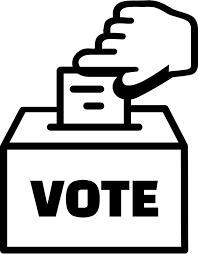
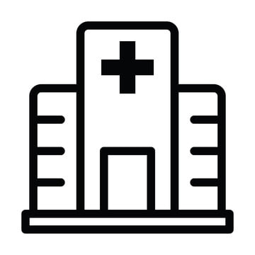
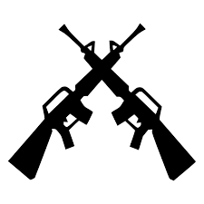

Nagykorúság röviden
A nagykorúság kifejezése azt takarja, hogy az adott személy szerződéses viszonyt létesíthet vagy más jognyilatkozatot tehet. Ekkor a szülők elvesztik a felügyeleti jogaikat és felelősségeiket a gyerekeikkel szemben, lehetségessé válik a házasodás és a szavazás, a munkavállalás, lehetségessé/kötelezővé válik a katonaság, felügyelet nélkül külföldre utazás, autó- vagy lakásvásárlás, hitelfelvétel, alkoholfogyasztás és dohányzás stb. 18 évesen megérkezik a szabadság, és vele párhuzamosan a felelősségérzet is.
Bárhová bemehetsz 
Magyarországon legálisan vásárolhatsz majd alkoholt és dohányt is. Ha az Egyesült Államokba látogatsz, akkor hamar ismét gyermek lehetsz, ugyanis ott 21. év a korhatár. Ha a 18. szülinapodat már egy menő klubban ünnepelnéd, akkor a belépéssel, sajnos, meg kell várnod az éjfélt! A nagykorúsággal járó jogok ugyanis a születésnapodat követő nap 0.01 perctől lépnek érvénybe! Ha eddig csak kívülről csodáltad a kaszinók villódzó fényeit, jó hírünk van: mostantól belülről is megnézheted, milyen. A szerencsejáték világa is megnyitja előtted kapuit.
Munka
Bármilyen munkát elvállalhatsz, amilyet csak szeretnél. Határ a csillagos ég! (És sok órát is dolgozhatsz egyszerre)
Utazás
Bárhová utazhatsz a világban a szüleid vagy felügyelet nélkül, azért az útlevelet ne felejtsd el időben elkészíttetni és kellően járj utána, hátha szükséges abba az országba beutazás előtt oltást kapnod!
Szülők nélkül
Minden jognyilatkozatod hatályos, a szülői beleegyezés többé semmihez sem szükséges. Saját Ügyfélkapud lesz, ahol a hivatalos ügyeket már csak te intézheted. Rendelkezhetsz a jogaidról. Minden, amit aláírsz következményekkel járhat, ezért csak azt írd alá, amit végigolvastál és biztosan egyetértesz vele. Bármikor igénybe vehetsz jogi és egyéb segítséget (anyagi vonzata van) Amíg nappali iskolában tanulsz, a szülő köteles biztosítani a lakhatást, étkezést, jogod van az oktatáshoz és az egészségügyi ellátáshoz maximum 25 éves korodig. Ha nem jársz iskolába a szülő nem köteles már biztosítani a lakhatásodat!
Bármit bérelhetsz vagy megvehetsz
Mostantól autót is bérelhetsz kedvedre – na meg persze a pénztárcád kedvére. De itt is figyelni kell, hiszen más országokban eltérő korhatárok lehetnek, Cipruson például 26 év alatt még nincs rá lehetőséged. Vehetsz a saját nevedre lakást is és igényelhetsz kölcsönt is, amennyiben van jövedelmed vagy egyéb fedezeted, de jó ha tisztában vagy a hitelek következményeivel, mert eladósodhatsz.
Mozizz korlátlanul!
Mostantól nem kell majd mással megvetetni a 18-as karikás filmekre szóló mozijegyeket! Habár lehet még egy darabig elkérik majd a személyid, de mostantól senki sem áll majd közéd és a legjobb horrorfilmek közé!
Házasság 
Ha ez eddig akadály volt, ezután bármikor házasodhatsz szintén felnőtt partnereddel.
Szavazás 
Mostantól Te is beleszólhatsz a politikába, választások idején szavazhatsz.
Orvosi ellátás 
Mostantól új felnőtt házi orvosod lesz, akit választhatsz is és bármikor elmehetsz vizsgálatokra. Jó, ha tudod, hogy amennyiben már nem jársz nappali iskolába és nincs jövedelmed, akkor neked kell havonta befizetned a kb. 8.000 Ft összegű társadalombiztosítási (tb) járulékot, hogy igénybe vehesd az ingyenes orvosi ellátást. Ha dolgozol, akkor a béredből automatikusan levonják. (magánorvosnál mindig fizetni kell)
Büntetés 
Mivel fiatal felnőttnek számítasz, ha rossz fát teszel a tűzre, már nem a fiatalkorúak börtönébe, hanem a felnőtt elítéltek börtönébe, fogházába vagy fegyházába kerülhetsz. A Bűntető Törvénykönyvben találod a szankciókat.
Felelősség 
Ha valamit figyelmetlenül írsz alá, és bajod származik belőle, később nem érvelhetsz azzal, hogy a szüleid nem egyeztek bele. 18 éves korodtól minden jognyilatkozatod hatályos és mindenért felelősséggel tartozol.
Kedvezmény
Nem használhatod a 18 éven aluliaknak szóló kedvezményeket.
Önállóság 
A szüleid hiába érvelnek azzal, hogy „amíg az ő házukban laksz, azt teszed, amit mondanak…” Jogilag nem érvényes, hiszen már felnőtt vagy, aki saját magáról rendelkezhet. Ez, persze, nem jelenti azt, hogy rúgd fel az összes szabályt, és legyél tiszteletlen a szüleiddel! Ne legyél! Igazán felnőtt akkor leszel, ha helyén tudod kezelni még a szüleiddel való konfliktusokat is!
Fotók, videók
Ha barátnőd/barátod még nincs 18 éves, gyorsan töröld ki a róla készült meztelen képeket a telefonodból, mert ha a hatóságokhoz kerül, bizony nagy galibába keveredhetsz, kiskorúról készült pornográf képek birtoklásáért.
Párkapcsolat
Ha pedig 14 évesnél fiatalabb a párod, sajnos a testi örömökkel is várni kell még. Magyarországon a belegyezési korhatár 14 év – vagyis amikortól az egyén jogot formálhat arra, hogy szabad döntés alapján szexuális kapcsolatot létesíthessen valakivel. Ennek értelmében, ha te 18 éves múltál, a párod pedig 12, vagy annál is kevesebb, akkor szexuális erőszakot követsz el (bizony, akkor is, ha ő beleegyezik), ha pedig 12-14 év között van, akkor szexuális visszaélést.
KRESZ 
A Közúti Közlekedés Szabályai rendeletet ismerned kell, akár gyalogosként, akár biciklisként vagy rollerrel, már téged vonnak felelősségre a szabályok megszegéséért, még ha nem is ismerted azokat.
Katonaság 
Jelenleg nincs sorkatonaság, de különleges esetekben, háborúban, vészhelyzet esetén a 18-50 év közötti férfiakat behívhatják katonai szolgálatra, amely kötelező.
Szülőtartás
Ez egy új jogszabály, csak nagyon extrém esetre, de jó ha tudod! Ha a szüleid saját hibájukon kívül nehéz helyzetbe kerülnek, pl betegség és nem tudják eltartani magukat és te már dolgozol, akkor szülőtartásra kötelezhetnek.